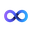
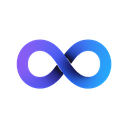

A long article.
A short answer.
Get answers without leaving the page.
See exactly where the answer came from.
Only need one paragraph?
Highlight it.
meridian.example
/the-lighthouse-that-outlived-its-empire

Eternal Summary

Eternal Summary.
Add to Chrome
Works in Chrome, Brave, Edge and Arc.